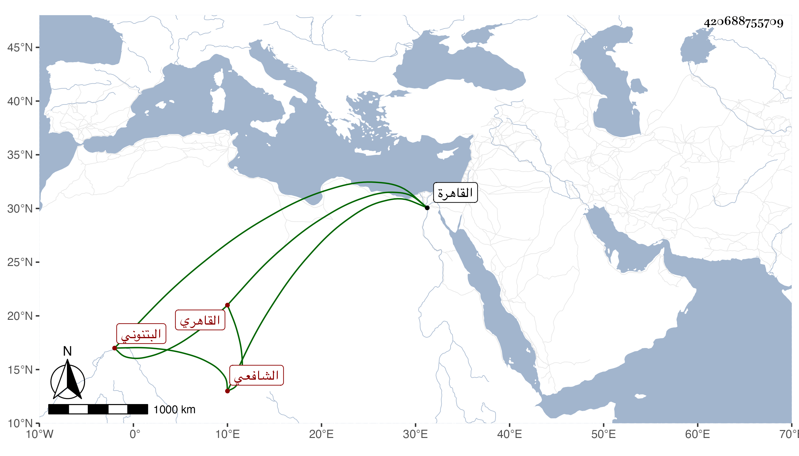

0902Sakhawi.DawLamic.ITO20230111-ara1.EIS1600.420688755709
Biography ID: 420688755709
404
محمد بن علي بن أحمد الشمس النور البتنوني الأصل القاهري الشافعي والد ولي الدين محمد ويعرف بالبتنوني . كان جده من جماعة الجمال يوسف العجمي فلما مات انتمى ولده أبو صاحب الترجمة مع إخوته له ولم يلبث أن مات الشيخ فنشأ على خير وستر وأقرأ المماليك في الأطباق ، استقر في عدة مباشرات . وكان مولد ولده هذا تقريبا في سنة ثلاث وعشرين بالقاهرة ونشأ بها في كنف أبويه فحفظ القرآن والعمدة والمنهاج ، وعرض على جماعة كشيخنا ومات والده وقد قارب المراهقة فقرر في جهاته كالمباشرة بطيلان وبالحلي والظاهر وبهادر المعزي وغيرها كالحسنية فلم يحسن السير ولكنه انتمى لأبي البقاء بن العلم البلقيني ثم للصلاح المكيني ربيب العلم . واجتهد في التحصيل من أي وجه كان مع تسلطه في أيام العلم فمن بعده على ضعفاء المستحقين في الأوقاف التي تحت مباشرته بالقطع ونحوه وإيذائه لأهل الذمة لكونه يتكلم على مسجد بالقرب من كنيسة حارة زويلة وأخذه منهم بالرهبة والرغبة حتى أثرى وأنشأ بجواري ملكا ارتكب فيه السهل والوعر كل ذلك مع تعرضه للأكابر حتى أنه نافر المكيني بعد موت عمه ونسي كل أمر كان منه في حقه وصدق قول القائل : من أعان ظالما سلط عليه . ولزم من ذلك إغراؤه البباوي في أيام تسلطه عليه فوثب عليه وثبة كاد يهلكه فيها فترامى علي مع كثرة أذيته لي حتى خلصته . واستمر على طريقته حتى مات في ثاني عشري صفر سنة سبع وسبعين وصلي عليه من الغد ثم دفن بحوش سعيد السعداء عفا الله عنه وإيانا .
